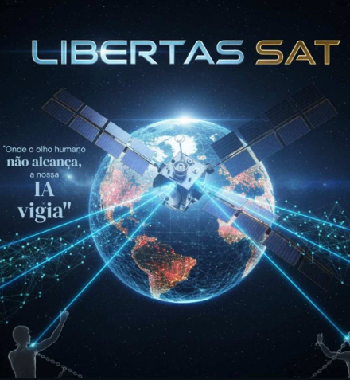

Tecnologia Satelital de Ponta
Justiça vinda do espaço.
Monitoramos cadeias de suprimentos globais em tempo real. Se houver exploração, nossa IA detecta. Se houver crime, nós expomos.
150+
Países
98.7%
Precisão
